GE865 Hardware User Guide
1vv0300799 Rev.12 – 27-07-2010


GE865 Hardware User Guide
1vv0300799 Rev.12 – 27-07-2010
APPLICABILITY TABLE
PRODUCT
GE865
Reproduction forbidden without Telit Communications S.p.A. written authorization - All Rights Reserved
page 2 of 78


GE865 Hardware User Guide
1vv0300799 Rev.12 – 27-07-2010
DISCLAIMER
The information contained in this document is the proprietary information of Telit
Communications S.p.A. and its affiliates (“TELIT”). The contents are confidential and
any disclosure to persons other than the officers, employees, agents or subcontractors
of the owner or licensee of this document, without the prior written consent of Telit, is
strictly prohibited.
Telit makes every effort to ensure the quality of the information it makes available.
Notwithstanding the foregoing, Telit does not make any warranty as to the information
contained herein, and does not accept any liability for any injury, loss or damage of any
kind incurred by use of or reliance upon the information.
Telit disclaims any and all responsibility for the application of the devices characterized
in this document, and notes that the application of the device must comply with the
safety standards of the applicable country, and where applicable, with the relevant
wiring rules.
Telit reserves the right to make modifications, additions and deletions to this document
due to typographical errors, inaccurate information, or improvements to programs
and/or equipment at any time and without notice. Such changes will, nevertheless be
incorporated into new editions of this application note.
All rights reserved.
© 2009, 2010 Telit Communications S.p.A.
Reproduction forbidden without Telit Communications S.p.A. written authorization - All Rights Reserved
page 3 of 78


GE865 Hardware User Guide
1vv0300799 Rev.12 – 27-07-2010
Contents
APPLICABILITY TABLE.......................................................................................................................................................2
1
INTRODUCTION .................................................................................................................................................. 7
1.1 SCOPE ..............................................................................................................................................................................7
1.2 AUDIENCE.........................................................................................................................................................................7
1.3 CONTACT INFORMATION, SUPPORT ....................................................................................................................................7
1.4 DOCUMENT ORGANIZATION................................................................................................................................................8
1.5 TEXT CONVENTIONS...........................................................................................................................................................9
1.6 RELATED DOCUMENTS ......................................................................................................................................................9
1.7 DOCUMENT HISTORY .......................................................................................................................................................10
2
OVERVIEW .......................................................................................................................................................... 11
3
GE865 MECHANICAL DIMENSIONS....................................................................................................................... 13
4
GE865 MODULE CONNECTIONS ........................................................................................................................... 14
4.1 PIN-OUT .......................................................................................................................................................................14
4.1.1 BGA Balls Layout ................................................................................................................................................17
5
HARDWARE COMMANDS .................................................................................................................................... 18
5.1 TURNING ON THE GE865................................................................................................................................................18
5.2 TURNING OFF THE GE865 ..............................................................................................................................................23
5.3 RESETTING THE GE865 ...................................................................................................................................................25
5.3.1 Hardware Unconditional restart .......................................................................................................................25
6
POWER SUPPLY ................................................................................................................................................... 28
6.1 POWER SUPPLY REQUIREMENTS......................................................................................................................................28
6.2 POWER CONSUMPTION ....................................................................................................................................................29
6.3 GENERAL DESIGN RULES ................................................................................................................................................30
6.3.1 Electrical Design Guidelines .............................................................................................................................30
6.3.2 Thermal Design Guidelines ...............................................................................................................................34
6.3.3 Power Supply PCB layout Guidelines ...............................................................................................................35
7
ANTENNA ............................................................................................................................................................ 36
7.1 GSM ANTENNA REQUIREMENTS ......................................................................................................................................36
7.2 GSM ANTENNA - PCB LINE GUIDELINES.........................................................................................................................37
7.3 GSM ANTENNA - INSTALLATION GUIDELINES...................................................................................................................38
8
LOGIC LEVEL SPECIFICATIONS .............................................................................................................................. 39
8.1 RESET SIGNAL .................................................................................................................................................................40
9
SERIAL PORTS.................................................................................................................................................. 41
9.1 MODEM SERIAL PORT ................................................................................................................................................41
Reproduction forbidden without Telit Communications S.p.A. written authorization - All Rights Reserved
page 4 of 78


GE865 Hardware User Guide
1vv0300799 Rev.12 – 27-07-2010
9.2 RS232 LEVEL TRANSLATION ............................................................................................................................................43
9.3 5V UART LEVEL TRANSLATION ........................................................................................................................................46
10
AUDIO SECTION OVERVIEW ........................................................................................................................ 48
10.1 ELECTRICAL CHARACTERISTICS .....................................................................................................................................49
10.1.1 Input Lines .........................................................................................................................................................49
10.1.2 Output Lines ......................................................................................................................................................50
11
GENERAL PURPOSE I/O.................................................................................................................................... 51
11.1 GPIO LOGIC LEVELS......................................................................................................................................................52
11.2 USING A GPIO PAD AS INPUT ......................................................................................................................................53
11.3 USING A GPIO PAD AS OUTPUT...................................................................................................................................53
11.4 USING THE RF TRANSMISSION CONTROL GPIO4............................................................................................................53
11.5 USING THE RFTXMON OUTPUT GPIO5 ........................................................................................................................54
11.6 USING THE ALARM OUTPUT GPIO6................................................................................................................................54
11.7 USING THE BUZZER OUTPUT GPIO7 ..............................................................................................................................55
11.8 MAGNETIC BUZZER CONCEPTS ......................................................................................................................................56
11.8.1 Short Description ..............................................................................................................................................56
11.8.2 Frequency Behaviour........................................................................................................................................57
11.8.3 Power Supply Influence ...................................................................................................................................57
11.8.4 Working Current Influence ..............................................................................................................................57
11.9 INDICATION OF NETWORK SERVICE AVAILABILITY .............................................................................................................58
11.10 RTC BYPASS OUT........................................................................................................................................................59
11.11 EXTERNAL SIM HOLDER IMPLEMENTATION..................................................................................................................59
12
DAC AND ADC SECTION ................................................................................................................................... 60
12.1 DAC CONVERTER..........................................................................................................................................................60
12.1.1 Description.........................................................................................................................................................60
12.1.2 Enabling DAC.....................................................................................................................................................61
12.1.3 Low Pass Filter Example .................................................................................................................................61
12.2 ADC CONVERTER..........................................................................................................................................................62
12.2.1 Description.........................................................................................................................................................62
12.2.2 Using ADC Converter........................................................................................................................................62
13
MOUNTING THE GE865 ON YOUR BOARD ................................................................................................. 63
13.1 GENERAL ......................................................................................................................................................................63
13.2 MODULE FINISHING & DIMENSIONS................................................................................................................................63
13.3 RECOMMENDED FOOT PRINT FOR THE APPLICATION ........................................................................................................64
13.4 DEBUG OF THE GE865 IN PRODUCTION ..........................................................................................................................65
13.5 STENCIL........................................................................................................................................................................65
13.6 PCB PAD DESIGN ..........................................................................................................................................................66
13.7 SOLDER PASTE ..............................................................................................................................................................67
13.7.1 GE865 Solder reflow .........................................................................................................................................68
14
PACKING SYSTEM ........................................................................................................................................ 70
14.1 PACKING ON TRAY.............................................................................................................................................................70
14.1.1 Tray detail ............................................................................................................................................................71
Reproduction forbidden without Telit Communications S.p.A. written authorization - All Rights Reserved
page 5 of 78


GE865 Hardware User Guide
1vv0300799 Rev.12 – 27-07-2010
14.2 PACKAGING ON REEL .........................................................................................................................................................72
14.2.1 Carrier Tape detail................................................................................................................................................72
14.2.2 Reel detail ............................................................................................................................................................73
14.2.3 Packaging detail...................................................................................................................................................74
14.3 MOISTURE SENSIBILITY..................................................................................................................................................74
15
CONFORMITY ASSESSMENT ISSUES.................................................................................................................. 75
16
SAFETY RECOMMANDATIONS.......................................................................................................................... 77
Reproduction forbidden without Telit Communications S.p.A. written authorization - All Rights Reserved
page 6 of 78


GE865 Hardware User Guide
1vv0300799 Rev.12 – 27-07-2010
1 Introduction
1.1 Scope
The aim of this document is the description of some hardware solutions useful for
developing a product with the Telit GE865 module.
1.2 Audience
This document is intended for Telit customers, who are integrators, about to implement
their applications using our GE865 modules.
1.3 Contact Information, Support
For general contact, technical support, to report documentation errors and to order
manuals, contact Telit’s Technical Support Center (TTSC) at:
TS-EMEA@telit.com
TS-NORTHAMERICA@telit.com
TS-LATINAMERICA@telit.com
TS-APAC@telit.com
Alternatively, use:
http://www.telit.com/en/products/technical-support-center/contact.php
For detailed information about where you can buy the Telit modules or for
recommendations on accessories and components visit:
http://www.telit.com
To register for product news and announcements or for product questions contact
Telit’s Technical Support Center (TTSC).
Our aim is to make this guide as helpful as possible. Keep us informed of your
comments and suggestions for improvements.
Telit appreciates feedback from the users of our information.
Reproduction forbidden without Telit Communications S.p.A. written authorization - All Rights Reserved
page 7 of 78


GE865 Hardware User Guide
1vv0300799 Rev.12 – 27-07-2010
1.4 Document Organization
This document contains the following chapters:
Chapter 1: “Introduction” provides a scope for this document, target audience, contact
and support information, and text conventions.
Chapter 2: “Overview” provides an overview of the document.
Chapter 3: “GE865 Mechanical Dimensions”
Chapter 4: “GE865 Module Connections” deals with the pin out configuration and layout.
Chapter 5: “Hardware Commands” How to operate on the module via hardware.
Chapter 6: “Power supply” Power supply requirements and general design rules.
Chapter 7: “Antenna” The antenna connection and board layout design are the most
important parts in the full product design.
Chapter 8: “Logic Level specifications” Specific values adopted in the implementation of
logic levels for this module.
Chapter 9: “Serial ports” The serial port on the Telit GE865 is the core of the interface
between the module and OEM hardware
Chapter 10: “Audio Section overview” Refers to the audio blocks of the Base Band Chip
of the GE865 Telit Modules.
Chapter 11: “General Purpose I/O” How the general purpose I/O pads can be
configured.
Chapter 12 “DAC and ADC Section” Deals with these two kind of converters.
Chapter 13: “Mounting the GE865 on the application board” Recommendations and
specifics on how to mount the module on the user’s board.
Reproduction forbidden without Telit Communications S.p.A. written authorization - All Rights Reserved
page 8 of 78


GE865 Hardware User Guide
1vv0300799 Rev.12 – 27-07-2010
1.5 Text Conventions
Danger – This information MUST be followed or catastrophic equipment failure or
bodily injury may occur.
Caution or Warning – Alerts the user to important points about integrating the
module, if these points are not followed, the module and end user equipment may
fail or malfunction.
Tip or Information – Provides advice and suggestions that may be useful when
integrating the module.
All dates are in ISO 8601 format, i.e. YYYY-MM-DD.
1.6 Related Documents
• Telit's GSM/GPRS Family Software User Guide, 1vv0300784
• Audio settings application note , 80000NT10007a
• Digital Voice Interface Application Note, 80000NT10004a
• GE865 Product description,
• SIM Holder Design Guides, 80000NT10001a
• AT Commands Reference Guide, 80000ST10025a
• Telit EVK2 User Guide, 1vv0300704
Reproduction forbidden without Telit Communications S.p.A. written authorization - All Rights Reserved
page 9 of 78


GE865 Hardware User Guide
1vv0300799 Rev.12 – 27-07-2010
1.7 Document History
Revision
Date
Changes
ISSUE#0
2009-01-26
First ISSUE# 0 - DRAFT
ISSUE#1
2009-02-15
Updated current consumptions table
ISSUE#2
2009-02-15
Updated Pinout description
ISSUE#3
2009-03-18
Updated mechanical dimensions (balls spacing),
charger description removed,
Added better explanation of pin H5 (RF) and H1 (service)
ISSUE#4
2009-04-02
Updated VBATT supply Range, DAC schematic, Conformity assessment
ISSUE#5
03/06/2009 Updated section 13 (FCC Conformity assessment)
ISSUE#6
04/06/2009 Updated section 13 (FCC Conformity assessment)
ISSUE#7
2009-05-26
Applied new layout + minor editing
Edited PCB pad design par.13.1.6
ISSUE#8
2009-06-18
Updated all schematic drawings
Updated Chapter 10 Audio Section
Substituted GE865-QUAD with GE865
Corrected GE864-QUAD/PY with GE865
Updated Overview section
ISSUE#9
2009-07-27
Changed par. 5.1 Turning ON…. and par. 6.1 Power supply Requirements
Changed par. 13.3 and par.15 Conformity Assessment Issues
ISSUE#10
2009-09-22
Added DVI pins description
Updated table of power consumptions.
Added note on chapters 5.1, 5.2, 9.3
Corrected chapter 1.1
ISSUE#11
2010-07-12
Updated logic levels specification
Added NOTE on ON_OFF procedure, serial port , GPIO section
Corrected note on RESET section
Updated Current Consumptions
Updated flow charts for ON OFF and Reset
Updated name for Auxiliary UART port
Updated Chapter 7
Updated Chapter 14
ISSUE#12
2010-07-28
Updated Chapters 13.2, 13.5, 13.6, 14, 14.3.
Reproduction forbidden without Telit Communications S.p.A. written authorization - All Rights Reserved
page 10 of 78


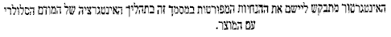
GE865 Hardware User Guide
1vv0300799 Rev.12 – 27-07-2010
2 Overview
The aim of this document is the description of some hardware solutions useful for
developing a product with the Telit GE865 module.
In this document all the basic functions of a mobile phone will be taken into account;
for each one of them a proper hardware solution will be suggested and eventually the
wrong solutions and common errors to be avoided will be evidenced. Obviously this
document cannot embrace the whole hardware solutions and products that may be
designed. The wrong solutions to be avoided shall be considered as mandatory, while
the suggested hardware configurations shall not be considered mandatory, instead the
information given shall be used as a guide and a starting point for properly developing
your product with the Telit GE865 module. For further hardware details that may not be
explained in this document refer to the Telit GE865 Product Description document
where all the hardware information is reported.
NOTICE:
(EN) The integration of the GSM/GPRS GE865 cellular module within user application
shall be done according to the design rules described in this manual.
(IT) L’integrazione del modulo cellulare GSM/GPRS GE865 all’interno dell’applicazione
dell’utente dovrà rispettare le indicazioni progettuali descritte in questo manuale.
(DE) Die Integration des GE865 GSM/GPRS Mobilfunk-Moduls in ein Gerät muß gemäß
der in diesem Dokument beschriebenen Kunstruktionsregeln erfolgen.
(SL) Integracija GSM/GPRS GE865 modula v uporabniški aplikaciji bo morala upoštevati
projektna navodila, opisana v tem piro niku.
(SP) La utilización del modulo GSM/GPRS GE865 debe ser conforme a los usos para los
cuales ha sido deseñado descritos en este manual del usuario.
(FR) L’intégration du module cellulaire GSM/GPRS GE865 dans l’application de
l’utilisateur sera faite selon les règles de conception décrites dans ce manuel.
(HE)
GE865-QUAD
The information presented in this document is believed to be accurate and reliable.
However, no responsibility is assumed by Telit Communications S.p.A. for its use, nor
Reproduction forbidden without Telit Communications S.p.A. written authorization - All Rights Reserved
page 11 of 78


GE865 Hardware User Guide
1vv0300799 Rev.12 – 27-07-2010
any infringement of patents or other rights of third parties which may result from its
use. No license is granted by implication or otherwise under any patent rights of Telit
Communications S.p.A. other than for circuitry embodied in Telit products. This
document is subject to change without notice.
Reproduction forbidden without Telit Communications S.p.A. written authorization - All Rights Reserved
page 12 of 78


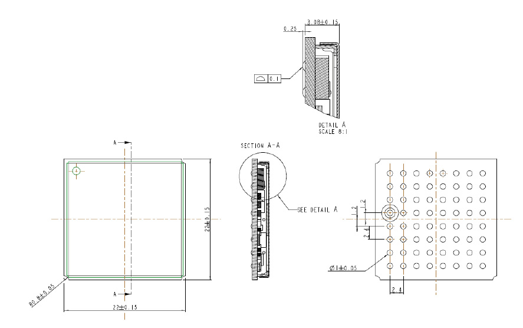
GE865 Hardware User Guide
1vv0300799 Rev.12 – 27-07-2010
3 GE865 Mechanical Dimensions
The GE865 overall dimensions are:
• Length:
22 mm
• Width:
22 mm
• Thickness:
3.0 mm
Reproduction forbidden without Telit Communications S.p.A. written authorization - All Rights Reserved
page 13 of 78


GE865 Hardware User Guide
1vv0300799 Rev.12 – 27-07-2010
4 GE865 module connections
4.1 PIN-OUT
Ball
Signal
I/O
Function
Note
Type
Audio
E8
EAR-
AO
Earphone signal output, phase -
Audio
D8
EAR+
AO
Earphone signal output, phase +
Audio
B8
MIC+
AI
Mic.signal input; phase+
Audio
C8
MIC-
AI
Mic.signal input; phase-
Audio
SIM card interface
A5
SIMCLK
O
External SIM signal – Clock
1,8 / 3V
A8
SIMRST
O
External SIM signal – Reset
1,8 / 3V
A6
SIMIO
I/O
External SIM signal – Data I/O
4.7K Pull up
1,8 / 3V
B7
SIMIN
I
External SIM signal – Presence (active low)
1,8 / 3V
A7
SIMVCC
-
External SIM signal – Power supply for the SIM
1,8 / 3V
Trace
D1
TX_AUX
O
Auxiliary UART (TX Data to DTE)
CMOS 2.8V
E1
RX_AUX
I
Auxiliary UART (RX Data from DTE)
CMOS 2.8V
Prog. / Data + HW Flow Control
A3
C103/TXD
I
Serial data input (TXD) from DTE
CMOS 2.8V
A4
C104/RXD
O
Serial data output to DTE
CMOS 2.8V
Input for Data terminal ready signal (DTR)
B3
C108/DTR
I
CMOS 2.8V
from DTE
Input for Request to send signal (RTS) from
A1
C105/RTS
I
CMOS 2.8V
DTE
A2
C106/CTS
O
Output for Clear to send signal (CTS) to DTE
CMOS 2.8V
Output for Data carrier detect signal (DCD) to
B5
C109/DCD
O
CMOS 2.8V
DTE
B2
C107/DSR
O
Output for Data set ready signal (DSR) to DTE
CMOS 2.8V
B4
C125/RING
O
Output for Ring indicator signal (RI) to DTE
CMOS 2.8V
DAC and ADC
G7
DAC_OUT
AO
Digital/Analog converter output
D/A
F5
ADC_IN1
AI
Analog/Digital converter input
A/D
F6
ADC_IN2
AI
Analog/Digital converter input
A/D
Miscellaneous Functions
C1
RESET*
I
Reset input
H2
VRTC
AI/O
VRTC Backup capacitor
Power
G8
STAT_LED
O
Status indicator led
CMOS 1.8V
Input command for switching power ON or OFF
B1
ON_OFF*
I
47K Pull Up
Pull up to VRTC
(toggle command).
E2
PWRMON
O
Power ON Monitor
CMOS 2.8V
Reproduction forbidden without Telit Communications S.p.A. written authorization - All Rights Reserved
page 14 of 78


GE865 Hardware User Guide
1vv0300799 Rev.12 – 27-07-2010
Ball
Signal
I/O
Function
Note
Type
H5
Antenna
O
Antenna output – 50 •
RF
Service pin can be used to upgrade the
H1
Service
I
module from ASC1 as a alternative to default
CMOS 2.8V
upgrading procedure using ASC0
GPIO
GPIO01 Configurable GPIO / Digital Audio
D3
GPIO_01 / DVI_WA0
I/O
CMOS 2.8V
Interface (WA0)
GPIO_02 / JDR /
GPIO02 I/O pin / Jammer Detect Report /
D2
I/O
CMOS 2.8V
DVI_RX
Digital Audio Interface (RX)
GPIO03 GPIO I/O pin // Digital Audio Interface
E4
GPIO_03 / DVI_TX
I/O
CMOS 2.8V
(TX)
H7
GPIO_04 / TX_DISAB
I/O
GPIO04 Configurable GPIO / TX Disable input
CMOS 2.8V
GPIO05 Configurable GPIO / Transmitter ON
G2
GPIO_05 / RFTXMON
I/O
CMOS 2.8V
monitor
H8
GPIO_06 / ALARM
I/O
GPIO06 Configurable GPIO / ALARM
CMOS 2.8V
G6
GPIO_07 / BUZZER
I/O
GPIO07 Configurable GPIO / Buzzer
CMOS 2.8V
GPIO08 Configurable GPIO / Digital Audio
D4
GPIO_08 / DVI_CLK
I/O
CMOS 2.8V
Interface (CLK)
F4
GPIO_09
I/O
GPIO09
4.7 K Pull Up
Open Drain
E3
GPIO_10
I/O
GPIO10
4.7 K Pull Up
Open Drain
Power Supply
F1
VBATT
-
Main power supply (Baseband)
Power
F2
VBATT_PA
-
Main power supply (Radio PA)
Power
F3
VBATT_PA
-
Main power supply (Radio PA)
Power
G1
GND
-
Ground
Power
C2
GND
-
Ground
Power
C7
GND
-
Ground
Power
E5
GND
-
Ground
Power
E7
GND
-
Ground
Power
G5
GND
-
Ground
Power
G4
GND
-
Ground
Power
G3
GND
-
Ground
Power
H3
GND
-
Ground
Power
H6
GND
-
Ground
Power
RESERVED
B6
-
C3
-
C4
-
C5
-
C6
-
D5
-
D6
-
D7
-
E6
-
F7
-
F8
-
Reproduction forbidden without Telit Communications S.p.A. written authorization - All Rights Reserved
page 15 of 78


GE865 Hardware User Guide
1vv0300799 Rev.12 – 27-07-2010
WARNING:Reserved pins must not be connected.
NOTE:
If not used, almost all pins should be left disconnected. The only exceptions are the
following pins:
pin
signal
F1,F2,F3
VBATT & VBATT_PA
G1, C2, C7, E5, E7, G5,
G4, G3, H3, H6
GND
B1
ON/OFF*
A3
TXD
C1
RESET*
A4
RXD
A1
RTS
D1
TXD_AUX
E1
RXD_AUX
H1
Service
RTS pin should be connected to the GND (on the module side) if flow control is not used
Reproduction forbidden without Telit Communications S.p.A. written authorization - All Rights Reserved
page 16 of 78


GE865 Hardware User Guide
1vv0300799 Rev.12 – 27-07-2010
4.1.1 BGA Balls Layout
TOP VIEW
A
B
C
D
E
F
G
H
1
C105 / RTS
ON_OFF
RESET*
TX_AUX
RX_AUX
VBATT
GND
SERVICE
GPIO_02 /
2
C106/CTS
C107/DSR
GND
PWRMON
VBATT_PA
GPIO_05
VRTC
DVI_RX
GPIO_01 /
3
C103_TXD
C108/DTR -
GPIO_10
VBATT_PA
GND
GND
DVI_WA0
GPIO_08 /
GPIO_03 /
4
C104/RXD
C125/RING -
GPIO_09
GND
DVI_CLK
DVI_TX
5
SIMCLK
C109/DCD -
- GND
ADC1
GND
ANT
6
SIMIO - - - - ADC2
GPIO_07
GND
7
SIMVCC
SIMIN
GND - GND - DAC
GPIO_04
8
SIMRST
MIC+
MIC-
EAR+
EAR- -
STATLED
GPIO_06
LEGENDA:
AUDIO
MISCELLANEOUS
SIM CARD
GPIO
ANTENNA
POWER SUPPLY VBATT
UARTS
POWER SUPPLY GND
DAC and ADC
RESERVED
NOTE:
The pin defined as H4 has to be considered RESERVED and not connected on any pin in
the application. The related area on the application has to be kept empty.
Reproduction forbidden without Telit Communications S.p.A. written authorization - All Rights Reserved
page 17 of 78


GE865 Hardware User Guide
1vv0300799 Rev.12 – 27-07-2010
5 Hardware Commands
5.1 Turning ON the GE865
To turn on the GE865 the pad ON# must be tied low for at least 1 second and then
released.
When the power supply voltage is lower than 3.4V the pad ON# must be tied low at least
3 seconds.
The maximum current that can be drained from the ON# pad is 0,1 mA.
A simple circuit to do it is:
ON#
R1
Q1
Power ON impulse
R2
GND
NOTE:
Don't use any pull up resistor on the ON# line, it is internally pulled up. Using pull up
resistor may bring to latch up problems on the GE865 power regulator and improper
power on/off of the module. The line ON# must be connected only in open collector
configuration.
Reproduction forbidden without Telit Communications S.p.A. written authorization - All Rights Reserved
page 18 of 78


GE865 Hardware User Guide
1vv0300799 Rev.12 – 27-07-2010
NOTE:
In this document all the lines that are inverted, hence have active low signals are
labelled with a name that ends with”#" or with a bar over the name.
TIP:
To check if the device has powered on, the hardware line PWRMON should be
monitored. After 900ms the line raised up the device could be considered powered on.
NOTE:
It is mandatory to avoid sending data to the serial ports during the first 200mS of the
module startup.
Reproduction forbidden without Telit Communications S.p.A. written authorization - All Rights Reserved
page 19 of 78


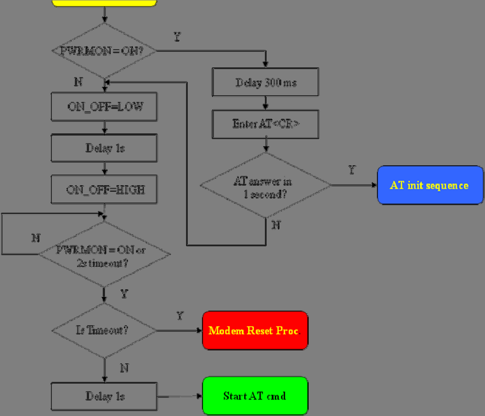
GE865 Hardware User Guide
1vv0300799 Rev.12 – 27-07-2010
A flow chart showing the proper turn on procedure is displayed below:
NOTE:
In order to avoid a back powering effect it is recommended to avoid having any HIGH
logic level signal applied to the digital pins of the GE865 when the module is powered
off or during an ON/OFF transition.
Reproduction forbidden without Telit Communications S.p.A. written authorization - All Rights Reserved
page 20 of 78


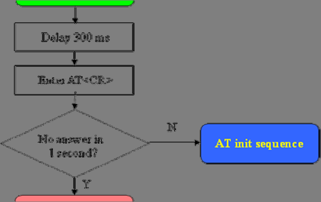


GE865 Hardware User Guide
1vv0300799 Rev.12 – 27-07-2010
A flow chart showing the AT command managing procedure is displayed below:
Reproduction forbidden without Telit Communications S.p.A. written authorization - All Rights Reserved
page 21 of 78

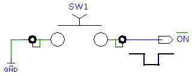

GE865 Hardware User Guide
1vv0300799 Rev.12 – 27-07-2010
For example:
1- Let's assume you need to drive the ON# pad with a totem pole output of a +3/5 V
microcontroller (uP_OUT1):
2- Let's assume you need to drive the ON# pad directly with an ON/OFF button:
Reproduction forbidden without Telit Communications S.p.A. written authorization - All Rights Reserved
page 22 of 78


GE865 Hardware User Guide
1vv0300799 Rev.12 – 27-07-2010
5.2 Turning OFF the GE865
Turning off of the device can be done in two ways:
• via AT command (see GE865 Software User Guide, AT#SHDN)
• by tying low pin ON#
Either ways, the device issues a detach request to network informing that the device will not be
reachable any more.
To turn OFF the GE865 the pad ON# must be tied low for at least 2 seconds and then released. A Pulse
duration less than 2 seconds should also start the power off procedure, but this is not guaranteed.
The same circuitry and timing for the power on must be used.
The device shuts down after the release of the ON# pad.
Reproduction forbidden without Telit Communications S.p.A. written authorization - All Rights Reserved
page 23 of 78


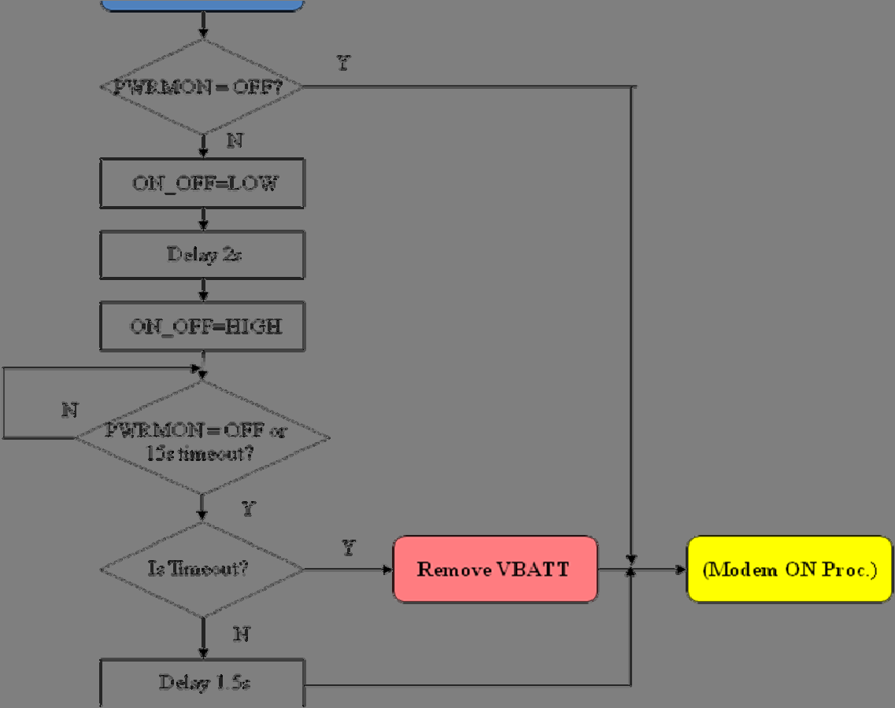
GE865 Hardware User Guide
1vv0300799 Rev.12 – 27-07-2010
The following flow chart shows the proper turnoff procedure:
TIP:
To check if the device has been powered off, the hardware line PWRMON must be
monitored. The device is powered off when PWRMON goes low.
NOTE:
In order to avoid a back powering effect it is recommended to avoid having any HIGH
logic level signal applied to the digital pins of the GE865 when the module is powered
off or during an ON/OFF transition.
Reproduction forbidden without Telit Communications S.p.A. written authorization - All Rights Reserved
page 24 of 78


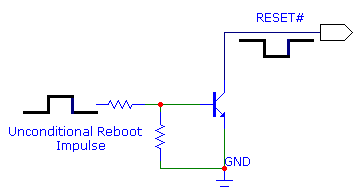
GE865 Hardware User Guide
1vv0300799 Rev.12 – 27-07-2010
5.3 Resetting the GE865
5.3.1 Hardware Unconditional restart
WARNING:
The hardware unconditional Restart must not be used during normal operation of the
device since it does not detach the device from the network. It shall be kept as an
emergency exit procedure to be done in the rare case that the device gets stacked
waiting for some network or SIM responses.
To unconditionally reboot the GE865, the pad RESET# must be tied low for at least 200 milliseconds
and then released.
The maximum current that can be drained from the RESET# pad is 0,15 mA.
NOTE:
Do not use any pull up resistor on the RESET* line nor any totem pole digital output.
Using pull up resistor may bring to latch up problems on the GE865 power regulator
and improper functioning of the module. The line RESET* must be connected only in
open collector configuration.
TIP:
The unconditional hardware restart must always be implemented on the boards and
the software must use it as an emergency exit procedure.
A simple circuit to do it is:
Reproduction forbidden without Telit Communications S.p.A. written authorization - All Rights Reserved
page 25 of 78


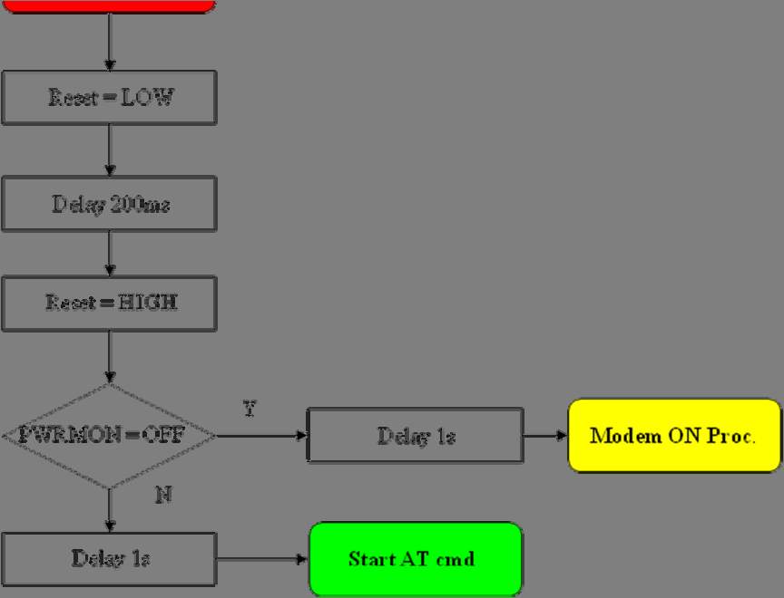
GE865 Hardware User Guide
1vv0300799 Rev.12 – 27-07-2010
In the following flow chart is detailed the proper restart procedure:
NOTE:
In order to avoid a back powering effect it is recommended to avoid having any HIGH
logic level signal applied to the digital pins of the GE865 when the module is powered
off or during an ON/OFF transition.
Reproduction forbidden without Telit Communications S.p.A. written authorization - All Rights Reserved
page 26 of 78


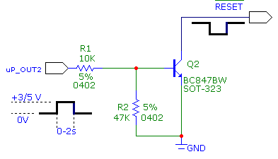
GE865 Hardware User Guide
1vv0300799 Rev.12 – 27-07-2010
For example:
1- Let us assume you need to drive the RESET# pad with a totem pole output of a +3/5
V microcontroller (uP_OUT2):
Reproduction forbidden without Telit Communications S.p.A. written authorization - All Rights Reserved
page 27 of 78


GE865 Hardware User Guide
1vv0300799 Rev.12 – 27-07-2010
6 Power Supply
The power supply circuitry and board layout are a very important part in the full product
design and they strongly reflect on the product overall performances, hence read
carefully the requirements and the guidelines that will follow for a proper design.
6.1 Power Supply Requirements
The external power supply must be connected to VBATT & VBATT_PA signals and must
fulfill the following requirements:
POWER SUPPLY
Nominal Supply Voltage
3.8 V
Normal Operating Voltage Range
3.4 V÷ 4.20 V
Extended Operating Voltage Range
3.22 V÷ 4.50 V
NOTE:
The Operating Voltage Range MUST never be exceeded; care must be taken in order to
fulfil min/max voltage requirement.
NOTE:
Overshoot voltage (regarding MAX Extended Operating Voltage) and drop in voltage
(regarding MIN Extended Operating Voltage) MUST never be exceeded;
The “Extended Operating Voltage Range” can be used only with completely assumption
and application of the HW User guide suggestions.
NOTE:
When the power supply voltage is lower than 3.4V, to turn ON the module, the pad ON#
must be tied low for at least 3 seconds. See para 5.1.
Reproduction forbidden without Telit Communications S.p.A. written authorization - All Rights Reserved
page 28 of 78


GE865 Hardware User Guide
1vv0300799 Rev.12 – 27-07-2010
6.2 Power Consumption
The GE865 power consumptions are:
GE865
Average
Mode
Mode description
(mA)
SWITCHED OFF
Module supplied but Switched Off
Switched Off
<62uA
IDLE mode
AT+CFUN=1
16,0
Normal mode: full functionality of the module
AT+CFUN=4
16,0
Disabled TX and RX; module is not registered on the network
3,9
Paging Multiframe 2
AT+CFUN=0 or =5
2,5
Paging Multiframe 3
2,4
Paging Multiframe 4
1,5
Paging Multiframe 9
CSD TX and RX mode
GSM900 CSD PL5
240
GSM VOICE CALL
DCS1800 CSD PL0
175
GPRS (class 1) 1TX + 1RX
GSM900 PL5
225
GPRS Sending data mode
DCS1800 PL0
160
GPRS (class 10) 2TX + 3RX
GSM900 PL5
420
GPRS Sending data mode
DCS1800 PL0
290
The GSM system is made in a way that the RF transmission is not continuous, else it is
packed into bursts at a base frequency of about 216 Hz, and the relative current peaks
can be as high as about 2A. Therefore the power supply has to be designed in order to
withstand with these current peaks without big voltage drops; this means that both the
electrical design and the board layout must be designed for this current flow.
If the layout of the PCB is not well designed a strong noise floor is generated on the
ground and the supply; this will reflect on all the audio paths producing an audible
annoying noise at 216 Hz; if the voltage drop during the peak current absorption is too
much, then the device may even shutdown as a consequence of the supply voltage drop.
NOTE:
The electrical design for the Power supply should be made ensuring it will be capable
of a peak current output of at least 2 A.
Reproduction forbidden without Telit Communications S.p.A. written authorization - All Rights Reserved
page 29 of 78


GE865 Hardware User Guide
1vv0300799 Rev.12 – 27-07-2010
6.3 General Design Rules
The principal guidelines for the Power Supply Design embrace three different design
steps:
• the electrical design
• the thermal design
• the PCB layout.
6.3.1 Electrical Design Guidelines
The electrical design of the power supply depends strongly from the power source
where this power is drained. We will distinguish them into three categories:
• +5V input (typically PC internal regulator output)
• +12V input (typically automotive)
• Battery
6.3.1.1 + 5V input Source Power Supply Design Guidelines
• The desired output for the power supply is 3.8V, hence there's not a big difference
between the input source and the desired output and a linear regulator can be used. A
switching power supply will not be suited because of the low drop out requirements.
• When using a linear regulator, a proper heat sink shall be provided in order to dissipate
the power generated.
• A Bypass low ESR capacitor of adequate capacity must be provided in order to cut the
current absorption peaks close to the GE865, a 100μF tantalum capacitor is usually
suited.
• Make sure the low ESR capacitor on the power supply output (usually a tantalum one)
is rated at least 10V.
• A protection diode should be inserted close to the power input, in order to save the
GE865 from power polarity inversion.
Reproduction forbidden without Telit Communications S.p.A. written authorization - All Rights Reserved
page 30 of 78


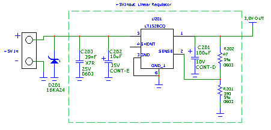
GE865 Hardware User Guide
1vv0300799 Rev.12 – 27-07-2010
An example of linear regulator with 5V input is:
6.3.1.2 + 12V input Source Power Supply Design Guidelines
• The desired output for the power supply is 3.8V, hence due to the big difference
between the input source and the desired output, a linear regulator is not suited and
shall not be used. A switching power supply will be preferable because of its better
efficiency especially with the 2A peak current load represented by the GE865.
• When using a switching regulator, a 500kHz or more switching frequency regulator is
preferable because of its smaller inductor size and its faster transient response. This
allows the regulator to respond quickly to the current peaks absorption.
• In any case the frequency and Switching design selection is related to the application to
be developed due to the fact the switching frequency could also generate EMC
interferences.
• For car PB battery the input voltage can rise up to 15,8V and this should be kept in mind
when choosing components: all components in the power supply must withstand this
voltage.
• A Bypass low ESR capacitor of adequate capacity must be provided in order to cut the
current absorption peaks, a 100μF tantalum capacitor is usually suited.
• Make sure the low ESR capacitor on the power supply output (usually a tantalum one)
is rated at least 10V.
• For Car applications a spike protection diode should be inserted close to the power
input, in order to clean the supply from spikes.
Reproduction forbidden without Telit Communications S.p.A. written authorization - All Rights Reserved
page 31 of 78


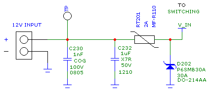
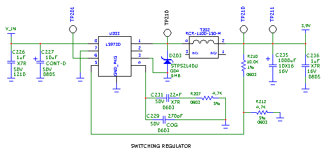
GE865 Hardware User Guide
1vv0300799 Rev.12 – 27-07-2010
• A protection diode should be inserted close to the power input, in order to save the
GE865 from power polarity inversion. This can be the same diode as for spike
protection.
An example of switching regulator with 12V input is in the below schematic (split in 2
parts):
Reproduction forbidden without Telit Communications S.p.A. written authorization - All Rights Reserved
page 32 of 78


GE865 Hardware User Guide
1vv0300799 Rev.12 – 27-07-2010
6.3.1.3 Battery Source Power Supply Design Guidelines
• The desired nominal output for the power supply is 3.8V and the maximum voltage
allowed is 4.2V, hence a single 3.7V Li-Ion cell battery type is suited for supplying the
power to the Telit GE865 module.
WARNING:
The three cells Ni/Cd or Ni/MH 3,6 V Nom. battery types or 4V PB types MUST NOT BE
USED DIRECTLY since their maximum voltage can rise over the absolute maximum
voltage for the GE865 and damage it.
NOTE:
DON'T USE any Ni-Cd, Ni-MH, and Pb battery types directly connected with GE865.
Their use can lead to overvoltage on the GE865 and damage it. USE ONLY Li-Ion battery
types.
• A Bypass low ESR capacitor of adequate capacity must be provided in order to cut the
current absorption peaks, a 100μF tantalum capacitor is usually suited.
• Make sure the low ESR capacitor (usually a tantalum one) is rated at least 10V.
• A protection diode should be inserted close to the power input, in order to save the
GE865 from power polarity inversion. Otherwise the battery connector should be done
in a way to avoid polarity inversions when connecting the battery.
• The battery capacity must be at least 500mAh in order to withstand the current peaks
of 2A; the suggested capacity is from 500mAh to 1000mAh.
Reproduction forbidden without Telit Communications S.p.A. written authorization - All Rights Reserved
page 33 of 78


GE865 Hardware User Guide
1vv0300799 Rev.12 – 27-07-2010
6.3.2 Thermal Design Guidelines
The thermal design for the power supply heat sink should be done with the following
specifications:
• Average current consumption during transmission @ max PWR level:
500mA
• Average current consumption during transmission @ min PWR level:
150mA
• Average current during Power Saving (CFUN=5) :
2,4mA
• Average current during idle (Power Saving disabled):
24mA
NOTE:
The average consumption during transmissions depends on the power level at which
the device is requested to transmit by the network. The average current consumption
hence varies significantly.
Considering the very low current during idle, especially if Power Saving function is
enabled, it is possible to consider from the thermal point of view that the device
absorbs current significantly only during calls.
If we assume that the device stays into transmission for short periods of time (let's say
few minutes) and then remains for a quite long time in idle (let's say one hour), then the
power supply has always the time to cool down between the calls and the heat sink
could be smaller than the calculated one for 500mA maximum RMS current, or even
could be the simple chip package (no heat sink).
Moreover in the average network conditions the device is requested to transmit at a
lower power level than the maximum and hence the current consumption will be less
than the 500mA, being usually around 150mA.
For these reasons the thermal design is rarely a concern and the simple ground plane
where the power supply chip is placed can be enough to ensure a good thermal
condition and avoid overheating.
For the heat generated by the GE865, you can consider it to be during transmission 1W
max during CSD/VOICE calls and 2W max during class10 GPRS upload.
This generated heat will be mostly conducted to the ground plane under the GE865; you
must ensure that your application can dissipate it.
Reproduction forbidden without Telit Communications S.p.A. written authorization - All Rights Reserved
page 34 of 78


GE865 Hardware User Guide
1vv0300799 Rev.12 – 27-07-2010
6.3.3 Power Supply PCB layout Guidelines
As seen on the electrical design guidelines the power supply shall have a low ESR
capacitor on the output to cut the current peaks and a protection diode on the input to
protect the supply from spikes and polarity inversion. The placement of these
components is crucial for the correct working of the circuitry. A misplaced component
can be useless or can even decrease the power supply performances.
• The Bypass low ESR capacitor must be placed close to the Telit GE865 power input
pads or in the case the power supply is a switching type it can be placed close to the
inductor to cut the ripple provided the PCB trace from the capacitor to the GE865 is
wide enough to ensure a dropless connection even during the 2A current peaks.
• The protection diode must be placed close to the input connector where the power
source is drained.
• The PCB traces from the input connector to the power regulator IC must be wide
enough to ensure no voltage drops occur when the 2A current peaks are absorbed.
Note that this is not made in order to save power loss but especially to avoid the voltage
drops on the power line at the current peaks frequency of 216 Hz that will reflect on all
the components connected to that supply, introducing the noise floor at the burst base
frequency. For this reason while a voltage drop of 300-400 mV may be acceptable from
the power loss point of view, the same voltage drop may not be acceptable from the
noise point of view. If your application doesn't have audio interface but only uses the
data feature of the Telit GE865, then this noise is not so disturbing and power supply
layout design can be more forgiving.
• The PCB traces to the GE865 and the Bypass capacitor must be wide enough to ensure
no significant voltage drops occur when the 2A current peaks are absorbed. This is for
the same reason as previous point. Try to keep this trace as short as possible.
• The PCB traces connecting the Switching output to the inductor and the switching diode
must be kept as short as possible by placing the inductor and the diode very close to
the power switching IC (only for switching power supply). This is done in order to
reduce the radiated field (noise) at the switching frequency (100-500 kHz usually).
• The use of a good common ground plane is suggested.
• The placement of the power supply on the board should be done in such a way to
guarantee that the high current return paths in the ground plane are not overlapped to
any noise sensitive circuitry as the microphone amplifier/buffer or earphone amplifier.
• The power supply input cables should be kept separate from noise sensitive lines such
as microphone/earphone cables.
Reproduction forbidden without Telit Communications S.p.A. written authorization - All Rights Reserved
page 35 of 78


GE865 Hardware User Guide
1vv0300799 Rev.12 – 27-07-2010
7 Antenna
The antenna connection and board layout design are the most important aspect in the
full product design as they strongly affect the product overall performances, hence
read carefully and follow the requirements and the guidelines for a proper design.
7.1 GSM Antenna Requirements
As suggested on the Product Description the antenna and antenna transmission line on
PCB for a Telit GE865 device shall fulfil the following requirements:
ANTENNA REQUIREMENTS
Depending by frequency band(s) provided by the
Frequency range
network operator, the customer shall use the most
suitable antenna for that/those band(s)
70 MHz in GSM850, 80 MHz in GSM900, 170 MHz in
Bandwidth
DCS & 140 MHz PCS band
1.4dBi @900 and 3dBi @1800
Gain
1.4dBi @850 and 3dBi @1900
Impedance
50•
Input power
> 2 W
VSWR absolute max
• 10:1 (limit to avoid permanent damage)
VSWR recommended
• 2:1 (limit to fulfil all regulatory requirements)
When using the GE865, since there's no antenna connector on the module, the antenna
must be connected to the GE865 antenna pad (BGA Ball H5) by means of a transmission
line implemented on the PCB.
In the case the antenna is not directly connected at the antenna pad of the GE865, then
a PCB line is needed in order to connect with it or with its connector.
Reproduction forbidden without Telit Communications S.p.A. written authorization - All Rights Reserved
page 36 of 78


GE865 Hardware User Guide
1vv0300799 Rev.12 – 27-07-2010
This transmission line shall fulfill the following requirements:
ANTENNA LINE ON PCB REQUIREMENTS
Characteristic Impedance
50•
Max Attenuation
0,3 dB
Coupling with other signals shall be avoided
Cold End (Ground Plane) of antenna shall be equipotential to
the GE865 ground pins
Furthermore if the device is developed for the US market and/or Canada market, it
shall comply with the FCC and/or IC approval requirements:
This device is to be used only for mobile and fixed application. In order to re-use the
Telit FCC/IC approvals the antenna(s) used for this transmitter must be installed to
provide a separation distance of at least 20 cm from all persons and must not be co-
located or operating in conjunction with any other antenna or transmitter. If antenna is
installed with a separation distance of less than 20 cm from all persons or is co-located
or operating in conjunction with any other antenna or transmitter then additional
FCC/IC testing may be required. End-Users must be provided with transmitter
operation conditions for satisfying RF exposure compliance.
Antennas used for this OEM module must not exceed 3dBi gain for mobile and fixed
operating configurations.
7.2 GSM Antenna - PCB line Guidelines
• Make sure that the transmission line’s characteristic impedance is 50• ;
• Keep line on the PCB as short as possible, since the antenna line loss shall be less
than around 0,3 dB;
• Line geometry should have uniform characteristics, constant cross section, avoid
meanders and abrupt curves;
• Any kind of suitable geometry / structure (Microstrip, Stripline, Coplanar, Grounded
Coplanar Waveguide...) can be used for implementing the printed transmission line
afferent the antenna;
• If a Ground plane is required in line geometry, that plane has to be continuous and
sufficiently extended, so the geometry can be as similar as possible to the related
canonical model;
• Keep, if possible, at least one layer of the PCB used only for the Ground plane; If
possible, use this layer as reference Ground plane for the transmission line;
• It is wise to surround (on both sides) the PCB transmission line with Ground, avoid
having other signal tracks facing directly the antenna line track.
• Avoid crossing any un-shielded transmission line footprint with other signal tracks on
different layers;
Reproduction forbidden without Telit Communications S.p.A. written authorization - All Rights Reserved
page 37 of 78


GE865 Hardware User Guide
1vv0300799 Rev.12 – 27-07-2010
• The ground surrounding the antenna line on PCB has to be strictly connected to the
main Ground Plane by means of via holes (once per 2mm at least), placed close to the
ground edges facing line track;
• Place EM noisy devices as far as possible from GE865 antenna line;
• Keep the antenna line far away from the GE865 power supply lines;
• If EM noisy devices are present on the PCB hosting the GE865, such as fast switching
ICs, take care of the shielding of the antenna line by burying it inside the layers of PCB
and surround it with Ground planes, or shield it with a metal frame cover.
• If EM noisy devices are not present around the line, the use of geometries like
Microstrip or Grounded Coplanar Waveguide has to be preferred, since they typically
ensure less attenuation if compared to a Stripline having same length;
7.3 GSM Antenna - Installation Guidelines
• Install the antenna in a place covered by the GSM signal.
• If the device antenna is located greater then 20cm from the human body and there are
no co-located transmitter then the Telit FCC/IC approvals can be re-used by the end
product
• If the device antenna is located less then 20cm from the human body or there are no
co-located transmitter then the additional FCC/IC testing may be required for the end
product (Telit FCC/IC approvals cannot be reused)
• Antenna shall not be installed inside metal cases
• Antenna shall be installed also according Antenna manufacturer instructions.
Reproduction forbidden without Telit Communications S.p.A. written authorization - All Rights Reserved
page 38 of 78

GE865 Hardware User Guide
1vv0300799 Rev.12 – 27-07-2010
8 Logic level specifications
Where not specifically stated, all the interface circuits work at 2.8V CMOS logic levels.
The following table shows the logic level specifications used in the GE865 interface
circuits:
Absolute Maximum Ratings -Not Functional
Parameter
Min
Max
Input level on any digital pin
-0.3V
+3.1V
(CMOS 2.8) when on
Input level on any digital pin
-0.3V
+2.1V
(CMOS 1.8) when on
Input voltage on analog pins
-0.3V
+3.0 V
when on
Operating Range - Interface levels (2.8V CMOS)
Level
Min
Max
Input high level
2.1V
3.1V
Input low level
0V
0.5V
Output high level
2.2V
3.1V
Output low level
0V
0.35V
For 1.8V signals:
Operating Range - Interface levels (1.8V CMOS)
Level
Min
Max
Input high level
1.6V
2.0V
Input low level
0V
0.4V
Output high level
1,65V
2.0V
Output low level
0V
0.35V
Current
characteristics
Level
Typical
Output Current
1mA
Input Current
1uA
Reproduction forbidden without Telit Communications S.p.A. written authorization - All Rights Reserved
page 39 of 78


GE865 Hardware User Guide
1vv0300799 Rev.12 – 27-07-2010
8.1 Reset signal
Signal
Function
I/O
Bga Ball
RESET#
Phone reset
I
C1
RESET# is used to reset the GE865 . Whenever this signal is pulled low, the GE865 is
reset. When the device is reset it stops any operation. After the release of the reset
GE865 is unconditionally shut down, without doing any detach operation from the
network where it is registered. This behaviour is not a proper shut down because any
GSM device is requested to issue a detach request on turn off. For this reason the
Reset signal must not be used to normally shutting down the device, but only as an
emergency exit in the rare case the device remains stuck waiting for some network
response.
The RESET# is internally controlled on start-up to achieve always a proper power-on
reset sequence, so there's no need to control this pin on start-up. It may only be used
to reset a device already on that is not responding to any command.
NOTE:
Do not use this signal to power off the GE865. Use the ON/OFF signal to perform this
function or the AT#SHDN command.
Reset Signal Operating levels:
Signal
Min
Max
RESET Input high
1.8V*
2.1V
RESET Input low
0V
0.2V
* this signal is internally pulled up so the pin can be left floating if not used.
If unused, this signal may be left unconnected. If used, then it must always be
connected with an open collector transistor, to permit to the internal circuitry the
power on reset and under voltage lockout functions.
Reproduction forbidden without Telit Communications S.p.A. written authorization - All Rights Reserved
page 40 of 78


GE865 Hardware User Guide
1vv0300799 Rev.12 – 27-07-2010
9 Serial Ports
The serial port on the GE865 is the core of the interface between the module and OEM
hardware.
2 serial ports are available on the module:
• MODEM SERIAL PORT 1 (Main, ASC0)
• MODEM SERIAL PORT 2 (Auxiliary, ASC1)
9.1 MODEM SERIAL PORT
Several configurations can be designed for the serial port on the OEM hardware, but
the most common are:
• RS232 PC com port
• microcontroller UART @ 2.8V - 3V (Universal Asynchronous Receive Transmit)
• microcontroller UART @ 5V or other voltages different from 2.8V
Depending from the type of serial port on the OEM hardware a level translator circuit
may be needed to make the system work. The only configuration that doesn't need a
level translation is the 2.8V UART.
The serial port on the GE865 is a +2.8V UART with all the 7 RS232 signals. It differs from
the PC-RS232 in the signal polarity (RS232 is reversed) and levels. The levels for the
GE865 UART are the CMOS levels:
Absolute Maximum Ratings -Not Functional
Parameter
Min
Max
Input level on any
-0.3V
+3.1V
digital pad when on
Input voltage on analog -0.3V
+3.1V
pads when on
Operating Range - Interface levels (2.8V CMOS)
Level
Min
Max
Input high level V
2.1V
3.1 V
IH
Input low level V
0V
0.5V
IL
Output high level V
2.2V
3.1V
OH
Output low level V
0V
0.35V
OL
Reproduction forbidden without Telit Communications S.p.A. written authorization - All Rights Reserved
page 41 of 78


GE865 Hardware User Guide
1vv0300799 Rev.12 – 27-07-2010
The signals of the GE865 serial port are:
RS232
Signal
GE865
Name
Usage
Pin
Pad
Number
Number
Output from the GE865 that indicates
1
DCD - dcd_uart
B5
Data Carrier Detect
the carrier presence
RXD -
2
A4
Transmit line *see Note
Output transmit line of GE865 UART
tx_uart
TXD -
3
A3
Receive line *see Note
Input receive of the GE865 UART
rx_uart
Input to the GE865 that controls the
4
DTR - dtr_uart
B3
Data Terminal Ready
DTE READY condition
C2, C7, E5,
E7, G1, G3,
5
GND
Ground
ground
G4, G5, H3,
H6
Output from the GE865 that indicates
6
DSR - dsr_uart
B2
Data Set Ready
the module is ready
Input to the GE865 that controls the
7
RTS -rts_uart
A1
Request to Send
Hardware flow control
Output from the GE865 that controls
8
CTS - cts_uart
A2
Clear to Send
the Hardware flow control
Output from the GE865 that indicates
9
RI - ri_uart
B4
Ring Indicator
the incoming call condition
NOTE:
According to V.24, RX/TX signal names are referred to the application side, therefore on
the GE865 side these signal are on the opposite direction: TXD on the application side
will be connected to the receive line (here named TXD/ rx_uart ) of the GE865 serial
port and viceversa for RX.
NOTE:
For a minimum implementation, only the TXD and RXD lines can be connected, the
other lines can be left open provided a software flow control is implemented.
NOTE:
In order to avoid a back powering effect it is recommended to avoid having any HIGH
logic level signal applied to the digital pins of the GE865 when the module is powered
off or during an ON/OFF transition.
Reproduction forbidden without Telit Communications S.p.A. written authorization - All Rights Reserved
page 42 of 78


GE865 Hardware User Guide
1vv0300799 Rev.12 – 27-07-2010
9.2 RS232 level translation
In order to interface the GE865 with a PC com port or a RS232 (EIA/TIA-232) application
a level translator is required. This level translator must:
•
invert the electrical signal in both directions;
•
change the level from 0/2.8V to +15/-15V .
Actually, the RS232 UART 16450, 16550, 16650 & 16750 chipsets accept signals with
lower levels on the RS232 side (EIA/TIA-562), allowing a lower voltage-multiplying ratio
on the level translator. Note that the negative signal voltage must be less than 0V and
hence some sort of level translation is always required.
The simplest way to translate the levels and invert the signal is by using a single chip
level translator. There are a multitude of them, differing in the number of drivers and
receivers and in the levels (be sure to get a true RS232 level translator not a RS485 or
other standards).
By convention the driver is the level translator from the 0-2.8V UART to the RS232 level.
The receiver is the translator from the RS232 level to 0-2.8V UART.
In order to translate the whole set of control lines of the UART you will need:
• 5 drivers
• 3 receivers
NOTE:
The digital input lines working at 2.8V CMOS have an absolute maximum input voltage
of 3.0V; therefore the level translator IC shall not be powered by the +3.8V supply of the
module. Instead, it must be powered from a +2.7V / +2.9V (dedicated) power supply.
This is because in this way the level translator IC outputs on the module side (i.e.
GE865 inputs) will work at +3.8V interface levels, damaging the module inputs.
Reproduction forbidden without Telit Communications S.p.A. written authorization - All Rights Reserved
page 43 of 78


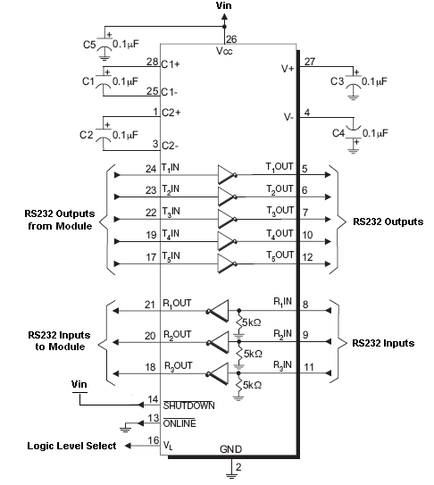
GE865 Hardware User Guide
1vv0300799 Rev.12 – 27-07-2010
An example of level translation circuitry of this kind is:
The example is done with a SIPEX SP3282EB RS232 Transceiver that could accept
supply voltages lower than 3V DC.
NOTE:
In this case Vin has to be set with a value compatible with the logic levels of the
module. (Max 2.9V DC). In this configuration the SP3282EB will adhere to EIA/TIA-562
voltage levels instead of RS232 (-5 ~ +5V).
Reproduction forbidden without Telit Communications S.p.A. written authorization - All Rights Reserved
page 44 of 78


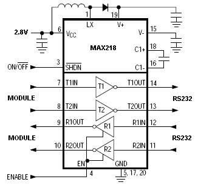
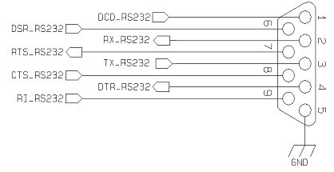
GE865 Hardware User Guide
1vv0300799 Rev.12 – 27-07-2010
Second solution could be done using a MAXIM transceiver (MAX218) In this case the
compliance with RS232 (+-5V) is possible.
Another level adapting method could be done using a standard RS232 Transceiver
(MAX3237EAI) adding some resistors to adapt the levels on the GE865 Input lines.
NOTE: In this case has to be taken in account the length of the lines on the application
to avoid problems in case of High-speed rates on RS232.
The RS232 serial port lines are usually connected to a DB9 connector with the following
layout:
Reproduction forbidden without Telit Communications S.p.A. written authorization - All Rights Reserved
page 45 of 78


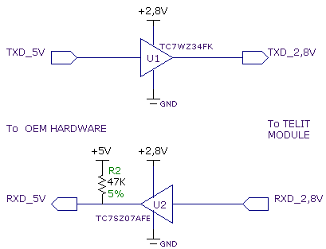
GE865 Hardware User Guide
1vv0300799 Rev.12 – 27-07-2010
9.3 5V UART level translation
If the OEM application uses a microcontroller with a serial port (UART) that works at a
voltage different from 2.8 - 3V, then a circuitry has to be provided to adapt the different
levels of the two set of signals. As for the RS232 translation there are a multitude of
single chip translators. For example a possible translator circuit for a 5V
TRANSMITTER/RECEIVER can be:
TIP:
Note that the TC7SZ07AE has open drain output; therefore the resistor R2 is
mandatory.
NOTE:
The UART input line TXD (rx_uart) of the GE865 is NOT internally pulled up with a
resistor, so there may be the need to place an external 47K pull-up resistor, either the
DTR (dtr_uart) and RTS (rts_uart) input lines are not pulled up internally, so an external
pull-up resistor of 47K may be required.
Reproduction forbidden without Telit Communications S.p.A. written authorization - All Rights Reserved
page 46 of 78


GE865 Hardware User Guide
1vv0300799 Rev.12 – 27-07-2010
NOTE:
The input lines working at 2.8VCMOS can be pulled-up with 47K
In case of reprogramming of the module has to be considered the use of the RESET line
to start correctly the activity.
The preferable configuration is having an external supply for the buffer.
Reproduction forbidden without Telit Communications S.p.A. written authorization - All Rights Reserved
page 47 of 78


GE865 Hardware User Guide
1vv0300799 Rev.12 – 27-07-2010
10 Audio Section Overview
The Base Band Chip of the GE865 provides one audio path both in Uplink (transmit) and
in Downlink (receive) direction , as shown in the next figure .
For more information refer to Telit document :
“
80000NT10007a Audio Settings Application Note “.
Baseband
Audio Front End
Balanced
Ear +
EP P1
Single ended
Earpiece Drivers
16
16 Load
Ear -
EP N1
Bias
MIC +
MICP1
100nF
MIC 1
Balanced
MIC -
MICN1
Single ended
100nF
xgoldafe.skd
Audio Section Block Diagram
Reproduction forbidden without Telit Communications S.p.A. written authorization - All Rights Reserved
page 48 of 78


GE865 Hardware User Guide
1vv0300799 Rev.12 – 27-07-2010
10.1 Electrical Characteristics
TIP: Being the microphone circuitry the more noise sensitive, its design and layout
must be done with particular care. Both microphone paths are balanced and the
OEM circuitry must be balanced designed to reduce the common mode noise
typically generated on the ground plane. However the customer can use the
unbalanced circuitry for particular application.
10.1.1 Input Lines
“MIC 1” differential microphone path
Line Coupling
AC*
Line Type
Balanced
Coupling capacitor
• 100nF
Differential input resistance
50k
Differential input voltage
• 1,03V @ MicG=0dB
pp
(*) WARNING : AC means that the signals from the microphone have to be connected
to input lines of the module through capacitors which value has to be • 100nF.
Not respecting this constraint, the input stages will be damaged.
WARNING: when particular OEM application needs a Single Ended Input configuration,
it is forbidden connecting the unused input directly to Ground, but only through a
capacitor which value has to be • 100nF..
Don’t forget that in Single Ended configuration the useful input signal will be halved.
Reproduction forbidden without Telit Communications S.p.A. written authorization - All Rights Reserved
page 49 of 78


GE865 Hardware User Guide
1vv0300799 Rev.12 – 27-07-2010
10.1.2 Output Lines
TIP : We suggest driving the load differentially , thus the output swing will double and
the need for the big output coupling capacitor avoided. However if particular OEM
application needs, also a Single Ended (S.E) circuitry can be implemented but the output
power will be reduced four times.
The OEM circuitry shall be designed to reduce the common mode noise typically
generated on the ground plane,getting the maximum power output from the device
(low resistance tracks).
WARNING. When in Single Ended configuration, the unused output line must be left
open: if this constraint is not respected, the output stage will be damaged.
“EAR_MT” Output Lines
line coupling single-ended AC
differential
DC
output load resistance
• 14
internal output resistance
4
(typical)
signal bandwidth
150 ÷4000 Hz @ -3dB
max. differential output voltage 1.31 V
(typical, open circuit)
rms
differential output voltage 328mV /16 @ -12dBFS (*)
rms
volume increment
2 dB per step
volume steps
10
(*) 0dBFS is the normalized overall Analog Gain equal to 3,7V differential
pp
Reproduction forbidden without Telit Communications S.p.A. written authorization - All Rights Reserved
page 50 of 78


GE865 Hardware User Guide
1vv0300799 Rev.12 – 27-07-2010
11 General Purpose I/O
The general purpose I/O pads can be configured to act in three different ways:
•
input
•
output
•
alternate function (internally controlled)
Input pads can only be read ; they report the digital value (high or low) present on the
pad at the read time .
Output pads can only be written or queried and set the value of the pad output.
An alternate function pad is internally controlled by the GE865 firmware and acts
depending on the function implemented.
For Logic levels please refer to chapter 8.
The following table shows the available GPIO on the GE865 .
Signal
I/O
Function
Type
Input /
Default
ON_OFF
State
Note
output
State
state
during
current
Reset
GPIO_01
I/O GPIO01 Configurable GPIO
CMOS 2.8V
1uA/1mA
INPUT
0
0
Alternate function
GPIO_02
I/O GPIO02 Configurable GPIO
CMOS 2.8V
1uA/1mA
INPUT
0
0
(JDR)
GPIO_03
I/O GPIO03 Configurable GPIO
CMOS 2.8V
1uA/1mA
INPUT
0
0
Alternate function
GPIO_04
I/O GPIO04 Configurable GPIO
CMOS 2.8V
1uA/1mA
INPUT
0
0
(RF Transmission
Control)
Alternate function
GPIO_05
I/O GPIO05 Configurable GPIO
CMOS 2.8V
1uA/1mA
INPUT
0
0
(RFTXMON)
Alternate function
GPIO_06
I/O GPIO06 Configurable GPIO
CMOS 2.8V
1uA/1mA
INPUT
0
0
(ALARM)
Alternate function
GPIO_07
I/O GPIO07 Configurable GPIO
CMOS 2.8V
1uA/1mA
INPUT
0
0
(BUZZER)
GPIO_08
I/O GPIO08 Configurable GPIO
CMOS 2.8V
1uA/1mA
INPUT
0
0
GPIO_09
I/O GPIO09 Configurable GPIO
CMOS 2.8V
1
1
1
Open Drain
GPIO_10
I/O GPIO10 Configurable GPIO
CMOS 2.8V
1
1
1
Open Drain
Not all GPIO pads support all these three modes:
• GPIO2 supports all three modes and can be input, output, Jamming Detect
Output (Alternate function)
• GPIO4 supports all three modes and can be input, output, RF Transmission
Control (Alternate function)
Reproduction forbidden without Telit Communications S.p.A. written authorization - All Rights Reserved
page 51 of 78


GE865 Hardware User Guide
1vv0300799 Rev.12 – 27-07-2010
• GPIO5 supports all three modes and can be input, output, RFTX monitor output
(Alternate function)
• GPIO6 supports all three modes and can be input, output, alarm output
(Alternate function)
• GPIO7 supports all three modes and can be input, output, buzzer output
(Alternate function)
11.1 GPIO Logic levels
Where not specifically stated, all the interface circuits work at 2.8V CMOS logic levels.
The following table shows the logic level specifications used in the GE865 interface
circuits:
Absolute Maximum Ratings -Not Functional
Parameter
Min
Max
Input level on any digital pin -0.3V
+3.1V
when on (CMOS 2.8)
Input level on any digital pin -0.3V
+2.1V
when on (CMOS 1.8)
Input voltage on analog pins -0.3V
+3.0V
when on
Operating Range - Interface levels (2.8V CMOS)
Level
Min
Max
Input high level
2.1V
3.1V
Input low level
0V
0.5V
Output high level
2.2V
3.1V
Output low level
0V
0.35V
For 1.8V signals:
Operating Range - Interface levels (1.8V CMOS)
Level
Min
Max
Input high level
1.6V
2.0V
Input low level
0V
0.4V
Output high level
1,65V
1.85V
Output low level
0V
0.35V
Reproduction forbidden without Telit Communications S.p.A. written authorization - All Rights Reserved
page 52 of 78


GE865 Hardware User Guide
1vv0300799 Rev.12 – 27-07-2010
11.2 Using a GPIO Pad as INPUT
The GPIO pads, when used as inputs, can be connected to a digital output of another
device and report its status, provided this device has interface levels compatible with
the 2.8V CMOS levels of the GPIO.
If the digital output of the device to be connected with the GPIO input pad has interface
levels different from the 2.8V CMOS, then it can be buffered with an open collector
transistor with a 47K pull up to 2.8V.
NOTE:
In order to avoid a back powering effect it is recommended to avoid having any HIGH
logic level signal applied to the digital pins of the GE865 when the module is powered
off or during an ON/OFF transition.
11.3 Using a GPIO Pad as OUTPUT
The GPIO pads, when used as outputs, can drive 2.8V CMOS digital devices or
compatible hardware. When set as outputs, the pads have a push-pull output and
therefore the pull-up resistor may be omitted.
11.4 Using the RF Transmission Control GPIO4
The GPIO4 pin, when configured as RF Transmission Control Input, permits to disable
the Transmitter when the GPIO is set to Low by the application.
In the design is necessary to add a pull up resistor (47K to 2.8V);
Reproduction forbidden without Telit Communications S.p.A. written authorization - All Rights Reserved
page 53 of 78


GE865 Hardware User Guide
1vv0300799 Rev.12 – 27-07-2010
11.5 Using the RFTXMON Output GPIO5
The GPIO5 pin, when configured as RFTXMON Output, is controlled by the GE865
module and will rise when the transmitter is active and fall after the transmitter activity
is completed.
There are 2 different modes for this function:
1) Active during all the calls:
For example, if a call is started, the line will be HIGH during all the conversation and it
will be again LOW after hanged up.
The line rises up 300ms before first TX burst and will became again LOW from 500ms
to 1s after last TX burst.
2) Active during all the TX activity:
The GPIO is following the TX bursts
Please refer to the AT User interface manual for additional information on how to
enable this function.
11.6 Using the Alarm Output GPIO6
The GPIO6 pad, when configured as Alarm Output, is controlled by the GE865 module
and will rise when the alarm starts and fall after the issue of a dedicated AT command.
This output can be used to power up the GE865 controlling microcontroller or
application at the alarm time, giving you the possibility to program a timely system
wake-up to achieve some periodic actions and completely turn off either the application
and the GE865 during sleep periods, dramatically reducing the sleep consumption to
few μA.
In battery-powered devices this feature will greatly improve the autonomy of the device.
Reproduction forbidden without Telit Communications S.p.A. written authorization - All Rights Reserved
page 54 of 78


GE865 Hardware User Guide
1vv0300799 Rev.12 – 27-07-2010
11.7 Using the Buzzer Output GPIO7
The GPIO7 pad, when configured as Buzzer Output, is controlled by the GE865 module
and will drive a Buzzer driver with appropriate square waves.
This permits to your application to easily implement Buzzer feature with ringing tones
or melody played at the call incoming, tone playing on SMS incoming or simply playing
a tone or melody when needed.
A sample interface scheme is included below to give you an idea of how to interface a
Buzzer to the GPIO7:
TR2
+V buzzer
SMBT2907A
R1
D1
C1
4,7K
+
D1N4148
33pF
-
R2
1K
GPIO7
TR1
BCR141W
NOTE:
To correctly drive a buzzer a driver must be provided, its characteristics depend on the
Buzzer and for them refer to your buzzer vendor.
Reproduction forbidden without Telit Communications S.p.A. written authorization - All Rights Reserved
page 55 of 78


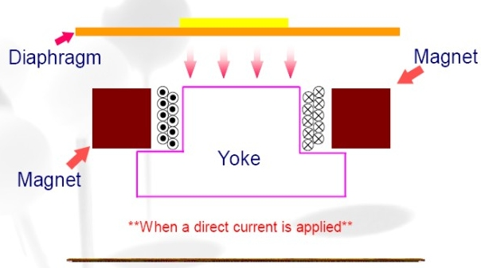
GE865 Hardware User Guide
1vv0300799 Rev.12 – 27-07-2010
11.8 Magnetic Buzzer Concepts
11.8.1 Short Description
A magnetic Buzzer is a sound-generating device with a coil located in the magnetic
circuit consisting of a permanent magnet, an iron core, a high permeable metal disk
and a vibrating diaphragm.
Drawing of the Magnetic Buzzer.
The disk and diaphragm are attracted to the core by the magnetic field. When an
oscillating signal is moved through the coil, it produces a fluctuating magnetic field
which vibrates the diaphragm at a frequency of the drive signal. Thus the sound is
produced relative to the frequency applied.
Diaphragm
movement.
Reproduction forbidden without Telit Communications S.p.A. written authorization - All Rights Reserved
page 56 of 78


GE865 Hardware User Guide
1vv0300799 Rev.12 – 27-07-2010
11.8.2 Frequency Behaviour
The frequency behaviour represents the effectiveness of the reproduction of the applied
signals. Because performance is related to a square driving waveform (whose
amplitude varies from 0V to V ), if you modify the waveform (e.g. from square to sinus)
pp
the frequency response will change.
11.8.3 Power Supply Influence
Applying a signal whose amplitude is different from that suggested by the
manufacturer, the performance change following the rule “if resonance frequency fo
increases, amplitude decreases”.
Because resonance frequency depends on acoustic design, by lowering the amplitude
of the driving signal the response bandwidth tends to become narrow, and vice versa.
Summarizing:
V •
f • V •
f •
pp
o
pp
o
The risk is that the f could easily fall outside of new bandwidth; consequently the SPL
o
could be much lower than the expected.
WARNING:
It is very important to respect the sense of the applied voltage: never apply to the "-"
pin a voltage more positive than the "+" pin: if this happens, the diaphragm vibrates in
the opposite direction with a high probability to be expelled from its physical position.
This damages the device permanently.
11.8.4 Working Current Influence
In the component data sheet you will find the value of MAX CURRENT: this represents
the maximum average current that can flow at nominal voltage without current
limitation. In other words it is not the peak current, which could be twice or three times
higher. If driving circuitry does not support these peak values, the SPL will never reach
the declared level or the oscillations will stop.
Reproduction forbidden without Telit Communications S.p.A. written authorization - All Rights Reserved
page 57 of 78


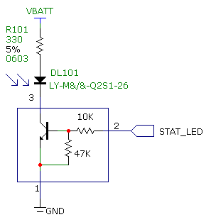
GE865 Hardware User Guide
1vv0300799 Rev.12 – 27-07-2010
11.9 Indication of network service availability
The STAT_LED pin status shows information on the network service availability and
Call status.
In the GE865 modules, the STAT_LED usually needs an external transistor to drive an
external LED.
Therefore, the status indicated in the following table is reversed with respect to the pin
status.
LED status
Device Status
Permanently off
Device off
Fast blinking
Net search / Not registered
(Period 1s, Ton 0,5s)
/ turning off
Slow blinking
Registered full service
(Period 3s, Ton 0,3s)
Permanently on
a call is active
A schematic example could be:
Reproduction forbidden without Telit Communications S.p.A. written authorization - All Rights Reserved
page 58 of 78


GE865 Hardware User Guide
1vv0300799 Rev.12 – 27-07-2010
11.10 RTC Bypass out
The VRTC pin brings out the Real Time Clock supply, which is separate from the rest of
the digital part, allowing having only RTC going on when all the other parts of the device
are off.
To this power output a backup capacitor can be added in order to increase the RTC
autonomy during power off of the battery. NO Devices must be powered from this pin.
11.11 External SIM Holder Implementation
Please refer to the related User Guide (SIM Holder Design Guides, 80000NT10001a).
Reproduction forbidden without Telit Communications S.p.A. written authorization - All Rights Reserved
page 59 of 78


GE865 Hardware User Guide
1vv0300799 Rev.12 – 27-07-2010
12 DAC and ADC section
12.1 DAC Converter
12.1.1 Description
The GE865 provides a Digital to Analog Converter. The signal (named DAC_OUT) is
available on BGA Ball G7 of the GE865 and on pin 17 of PL102 on GE865 Interface Board
(CS1324).
The on board DAC is a 10 bit converter, able to generate a analogue value based a
specific input in the range from 0 up to 1023. However, an external low-pass filter is
necessary
Min
Max
Units
Voltage range (filtered)
0
2,6
Volt
Range
0
1023
Steps
The precision is 10 bits so, if we consider that the maximum voltage is 2V, the
integrated voltage could be calculated with the following formula:
Integrated output voltage = (2 *value) / 1023
DAC_OUT line must be integrated (for example with a low band pass filter) in order to
obtain an analog voltage.
Reproduction forbidden without Telit Communications S.p.A. written authorization - All Rights Reserved
page 60 of 78


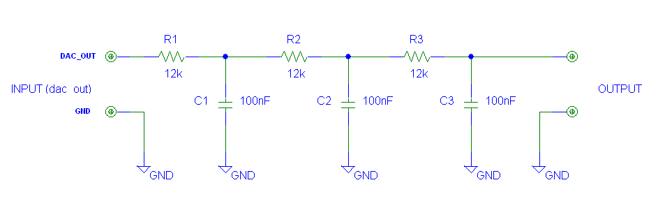
GE865 Hardware User Guide
1vv0300799 Rev.12 – 27-07-2010
12.1.2 Enabling DAC
An AT command is available to use the DAC function.
The command is: AT#DAC= [<enable> [, <value>]]
<value> - scale factor of the integrated output voltage (0..1023 - 10 bit precision)
it must be present if <enable>=1
Refer to SW User Guide or AT Commands Reference Guide for the full description of
this function.
NOTE:
The DAC frequency is selected internally. D/A converter must not be used during
POWERSAVING.
12.1.3 Low Pass Filter Example
Reproduction forbidden without Telit Communications S.p.A. written authorization - All Rights Reserved
page 61 of 78


GE865 Hardware User Guide
1vv0300799 Rev.12 – 27-07-2010
12.2 ADC Converter
12.2.1 Description
The on board A/D are 11-bit converter. They are able to read a voltage level in the range
of 0÷2 volts applied on the ADC pin input, store and convert it into 11 bit word.
Min
Max
Units
Input Voltage range
0
2
Volt
AD conversion
-
11
bits
Resolution
-
< 1
mV
The GE865 module provides 2 Analog to Digital Converters.
The input lines are:
ADC_IN1
available on Ball F5 and Pin 19 of PL102 on GE865 Interface Board (CS1324).
ADC_IN2
available on Ball F6 and Pin 20 of PL102 on GE865 Interface Board (CS1324).
12.2.2 Using ADC Converter
An AT command is available to use the ADC function.
The command is AT#ADC=1,2
The read value is expressed in mV
Refer to SW User Guide or AT Commands Reference Guide for the full description of
this function.
Reproduction forbidden without Telit Communications S.p.A. written authorization - All Rights Reserved
page 62 of 78


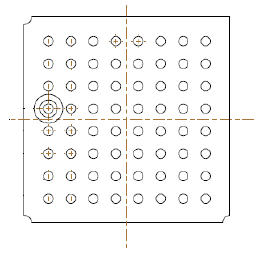
GE865 Hardware User Guide
1vv0300799 Rev.12 – 27-07-2010
13 Mounting the GE865 on your Board
13.1 General
The GE865 modules have been designed in order to be compliant with a standard lead-
free SMT process.
13.2 Module finishing & dimensions
Bottom View
Pin A1
Lead-free Alloy:
Surface finishing Sn/Ag/Cu for all solder pads
Reproduction forbidden without Telit Communications S.p.A. written authorization - All Rights Reserved
page 63 of 78


GE865 Hardware User Guide
1vv0300799 Rev.12 – 27-07-2010
13.3 Recommended foot print for the application
In order to easily rework the GE865 is suggested to consider on the application a 1.5mm
Inhibit area around the module.
It is also suggested, as common rule for an SMT component, to avoid having a mechanical
part of the application in direct contact with the module.
NOTE: In the customer application, the region under INHIBIT WIRING *1 (see
figure) must be clear from signal or ground paths.
Reproduction forbidden without Telit Communications S.p.A. written authorization - All Rights Reserved
page 64 of 78


GE865 Hardware User Guide
1vv0300799 Rev.12 – 27-07-2010
13.4 Debug of the GE865 in production
To test and debug the mounting of the GE865, we strongly recommend to foreseen test pads
on the host PCB, in order to check the connection between the GE865 itself and the
application and to test the performance of the module connecting it with an external
computer. Depending by the customer application, these pads include, but are not limited to
the following signals:
• TXD
• RXD
• ON/OFF
• RESET
• GND
• VBATT
• TX_AUX
• RX_AUX
• PWRMON
• SERVICE
13.5 Stencil
Stencil’s apertures layout can be the same of the recommended footprint (1:1), we suggest
a thickness of stencil foil ≥ 120μm.
Reproduction forbidden without Telit Communications S.p.A. written authorization - All Rights Reserved
page 65 of 78


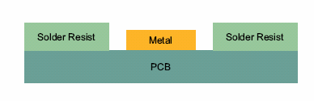
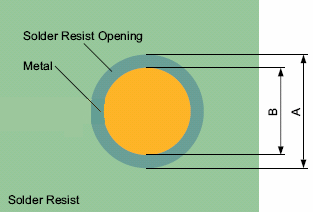
GE865 Hardware User Guide
1vv0300799 Rev.12 – 27-07-2010
13.6 PCB pad design
Non solder mask defined” (NSMD) type is recommended for the solder pads on the PCB.
Recommendations for PCB pad dimensions
Ball pitch [mm]
2,4
Solder resist opening diameter A [mm]
1,150
Metal pad diameter B [mm]
1 ± 0.05
Reproduction forbidden without Telit Communications S.p.A. written authorization - All Rights Reserved
page 66 of 78


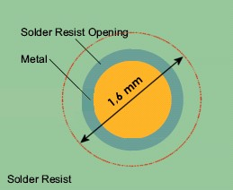
GE865 Hardware User Guide
1vv0300799 Rev.12 – 27-07-2010
It is not recommended to place via or microvia not covered by solder resist in an area of
1,6mm diameter around the pads unless it carries the same signal of the pad itself. (see
following figure).
Holes in pad are allowed only for blind holes and not for through holes.
Recommendations for PCB pad surfaces:
Finish
Layer thickness [μm]
Properties
Electro-less Ni
3 –7 /
good solder ability protection,
/ Immersion Au
0.05 – 0.15
high shear force values
The PCB must be able to resist the higher temperatures which are occurring at the lead-
free process. This issue should be discussed with the PCB-supplier. Generally, the
wettability of tin-lead solder paste on the described surface plating is better compared to
lead-free solder paste.
13.7 Solder paste
Lead free
Solder paste
Sn/Ag/Cu
Reproduction forbidden without Telit Communications S.p.A. written authorization - All Rights Reserved
page 67 of 78


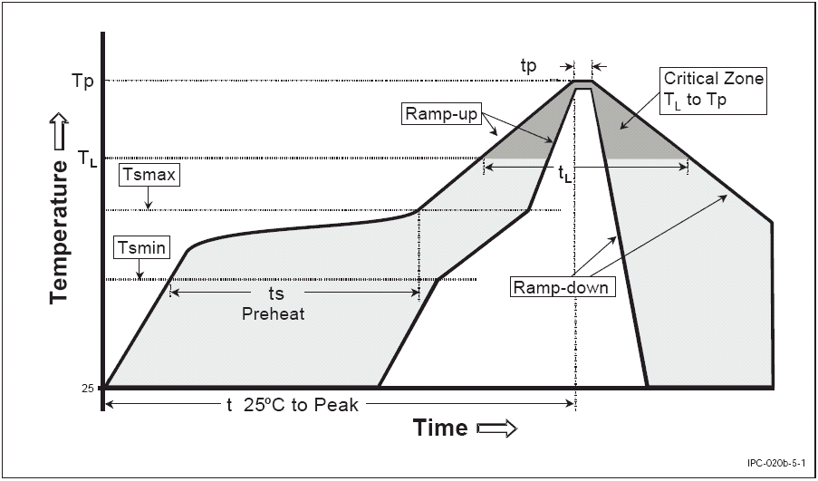
GE865 Hardware User Guide
1vv0300799 Rev.12 – 27-07-2010
13.7.1 GE865 Solder reflow
The following is the recommended solder reflow profile
Profile Feature
Pb-Free Assembly
Average ramp-up rate (T to T )
3°C/second max
L
P
Preheat
– Temperature Min (Tsmin)
150°C
– Temperature Max (Tsmax)
200°C
– Time (min to max) (ts)
60-180 seconds
Tsmax to TL
– Ramp-up Rate
3°C/second max
Time maintained above:
– Temperature (TL)
217°C
– Time (tL)
60-150 seconds
Peak Temperature (Tp)
245 +0/-5°C
Time within 5°C of actual Peak
10-30 seconds
Temperature (tp)
Ramp-down Rate
6°C/second max.
Time 25°C to Peak Temperature
8 minutes max.
Reproduction forbidden without Telit Communications S.p.A. written authorization - All Rights Reserved
page 68 of 78


GE865 Hardware User Guide
1vv0300799 Rev.12 – 27-07-2010
NOTE: All temperatures refer to topside of the package, measured on the package
body surface
WARNING: The GE865 module withstands one reflow process only.
Reproduction forbidden without Telit Communications S.p.A. written authorization - All Rights Reserved
page 69 of 78


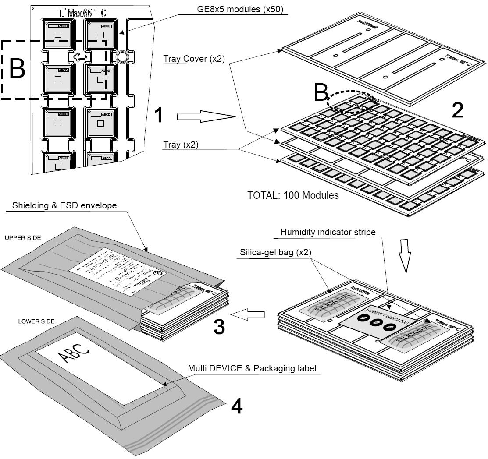
GE865 Hardware User Guide
1vv0300799 Rev.12 – 27-07-2010
14 Packing system
14.1 Packing on tray
The GE865 modules are packaged on trays of 50 pieces each. This is especially suitable
for the GE865 according to SMT processes for pick & place movement requirements.
See detail B for module positioning and tray orientation into the envelope.
Reproduction forbidden without Telit Communications S.p.A. written authorization - All Rights Reserved
page 70 of 78


GE865 Hardware User Guide
1vv0300799 Rev.12 – 27-07-2010
14.1.1 Tray detail
The size of the tray is: 329 x 176mm.
Section A-A
WARNING: These trays can withstand at the maximum temperature of 65° C.
Reproduction forbidden without Telit Communications S.p.A. written authorization - All Rights Reserved
page 71 of 78


GE865 Hardware User Guide
1vv0300799 Rev.12 – 27-07-2010
14.2 Packaging on reel
The GE865-QUAD can be packaged on reels of 200 pieces each. See figure for module
positioning into the carrier.
DIRECTION OF UNREELING
NOT Rounded
Corner
14.2.1 Carrier Tape detail
Reproduction forbidden without Telit Communications S.p.A. written authorization - All Rights Reserved
page 72 of 78


GE865 Hardware User Guide
1vv0300799 Rev.12 – 27-07-2010
14.2.2 Reel detail
Reproduction forbidden without Telit Communications S.p.A. written authorization - All Rights Reserved
page 73 of 78


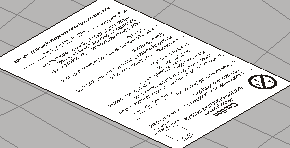
GE865 Hardware User Guide
1vv0300799 Rev.12 – 27-07-2010
14.2.3 Packaging detail
Silica-gel bag (x3)
Shielding & ESD envelope
Humidity indicator
Multi Device &
Packaging label
Reel label
TOTAL: 200 MODULES
14.3 Moisture sensibility
The GE865 is a Moisture Sensitive Device level 3, in according with standard IPC/JEDEC J-
STD-020, take care all the relatives requirements for using this kind of components.
Reproduction forbidden without Telit Communications S.p.A. written authorization - All Rights Reserved
page 74 of 78


GE865 Hardware User Guide
1vv0300799 Rev.12 – 27-07-2010
15 Conformity Assessment Issues
The Telit GE865 Module has been assessed in order to satisfy the essential requirements of the
R&TTE Directive 1999/05/EC (Radio Equipment & Telecommunications Terminal Equipments) to
demonstrate the conformity against the harmonised standards with the final involvement of a Notified
Body.
If the module is installed in conformance to the Telit installation manuals, no further evaluation under
Article 3.2 of the R&TTE Directive and do not require further involvement of a R&TTE Directive
Notified Body for the final product.
In all other cases, or if the manufacturer of the final product is in doubt, then the equipment
integrating the radio module must be assessed against Article 3.2 of the R&TTE Directive.
In all cases the assessment of the final product must be made against the Essential requirements of
the R&TTE Directive Articles 3.1(a) and (b), Safety and EMC respectively, and any relevant Article 3.3
requirements.
This Hardware User Guide contain all the information you may need for developing a product meeting
the R&TTE Directive.
Furthermore the GE865 Module module is FCC Approved as module to be installed in other devices.
This device is to be used only for fixed and mobile applications. If the final product after integration is
intended for portable use, a new application and FCC is required.
The GE865 Module is conforming to the following US Directives:
• Use of RF Spectrum. Standards: FCC 47 Part 24 (GSM 1900)
• EMC (Electromagnetic Compatibility). Standards: FCC47 Part 15
This device complies with Part 15 of the FCC Rules. Operation is subject to the following two
conditions:
(1) this device may not cause harmful interference, and
(2) this device must accept any interference received, including interference that may cause undesired
operation.
To meet the FCC's RF exposure rules and regulations:
Reproduction forbidden without Telit Communications S.p.A. written authorization - All Rights Reserved
page 75 of 78


GE865 Hardware User Guide
1vv0300799 Rev.12 – 27-07-2010
• The system antenna(s) used for this transmitter must be installed to provide a separation distance
of at least 20 cm from all the persons and must not be co-located or operating in conjunction with
any other antenna or transmitter.
• The system antenna(s) used for this module must not exceed 1.4dBi (850MHz) and 3.0dBi
(1900MHz) for mobile and fixed or mobile operating configurations.
• Users and installers must be provided with antenna installation instructions and transmitter
operating conditions for satisfying RF exposure compliance.
Manufacturers of mobile, fixed or portable devices incorporating this module are advised to clarify
any regulatory questions and to have their complete product tested and approved for FCC
compliance.
Reproduction forbidden without Telit Communications S.p.A. written authorization - All Rights Reserved
page 76 of 78


GE865 Hardware User Guide
1vv0300799 Rev.12 – 27-07-2010
16 SAFETY RECOMMANDATIONS
READ CAREFULLY
Be sure the use of this product is allowed in the country and in the environment
required. The use of this product may be dangerous and has to be avoided in the
following areas:
Where it can interfere with other electronic devices in environments such as
hospitals, airports, aircrafts, etc
Where there is risk of explosion such as gasoline stations, oil refineries, etc
It is responsibility of the user to enforce the country regulation and the specific
environment regulation.
Do not disassemble the product; any mark of tampering will compromise the warranty
validity.
We recommend following the instructions of the hardware user guides for a correct
wiring of the product. The product has to be supplied with a stabilized voltage source
and the wiring has to be conforming to the security and fire prevention regulations.
The product has to be handled with care, avoiding any contact with the pins because
electrostatic discharges may damage the product itself. Same cautions have to be
taken for the SIM, checking carefully the instruction for its use. Do not insert or remove
the SIM when the product is in power saving mode.
The system integrator is responsible of the functioning of the final product; therefore,
care has to be taken to the external components of the module, as well as of any
project or installation issue, because the risk of disturbing the GSM network or external
devices or having impact on the security. Should there be any doubt, please refer to the
technical documentation and the regulations in force.
Every module has to be equipped with a proper antenna with specific characteristics.
The antenna has to be installed with care in order to avoid any interference with other
electronic devices and has to guarantee a minimum distance from the body (20 cm). In
case of this requirement cannot be satisfied, the system integrator has to assess the
final product against the SAR regulation.
Reproduction forbidden without Telit Communications S.p.A. written authorization - All Rights Reserved
page 77 of 78


GE865 Hardware User Guide
1vv0300799 Rev.12 – 27-07-2010
The European Community provides some Directives for the electronic equipments
introduced on the market. All the relevant information’s are available on the European
Community website:
http://europa.eu.int/comm/enterprise/rtte/dir99-5.htm
The text of the Directive 99/05 regarding telecommunication equipments is available,
while the applicable Directives (Low Voltage and EMC) are available at:
http://europa.eu.int/comm/enterprise/electr_equipment/index_en.htm
Reproduction forbidden without Telit Communications S.p.A. written authorization - All Rights Reserved
page 78 of 78
Document Outline
- GE865 Hardware User Guide
- 1 Introduction
- 2 Overview
- 3 GE865 Mechanical Dimensions
- 4 GE865 module connections
- 5 Hardware Commands
- 6 Power Supply
- 7 Antenna
- 8 Logic level specifications
- ��
- ��
- 11 General Purpose I/O
- ��
- ��
- ��
- ��
- ��
- ��
- ��
- ��
- ��
- ��
- ��
- 12 DAC and ADC section
- ��
- ��
- ��
- 13.3 Recommended foot print for the application
- ��
- ��
- ��
- ��
- ��
- 15 Conformity Assessment Issues
- 16 SAFETY RECOMMANDATIONS